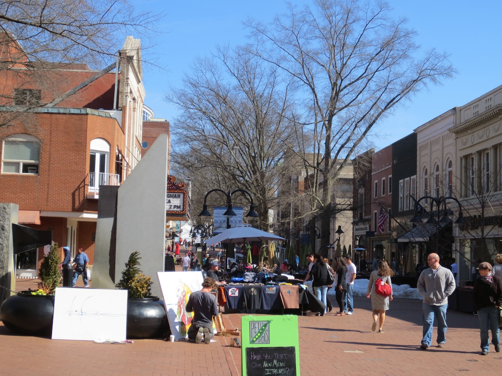

Charlottesville, VA
Estimated arrival date: 03.09.2013

First Glance Start Up Scene
- Some small consulting firms focused on the Department of Defense clients
located here: the National Ground Intelligence Center (NGIC) and a piece
of the Defense Intelligence Agency (DIA)